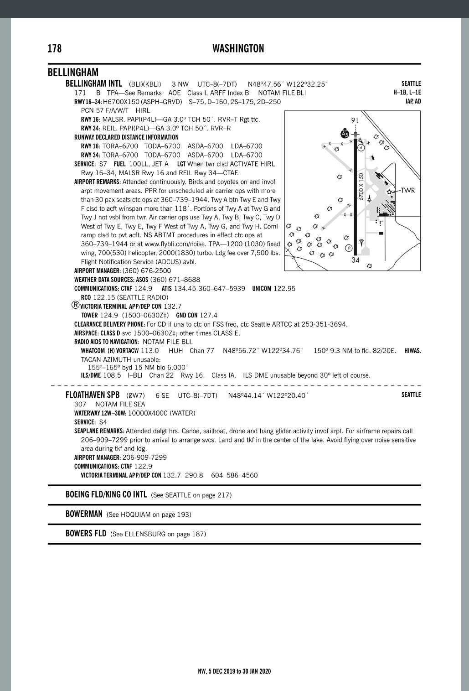
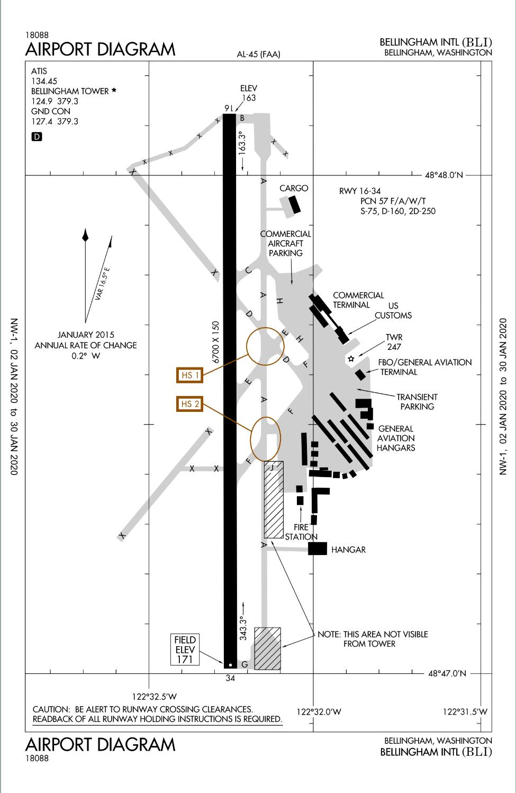
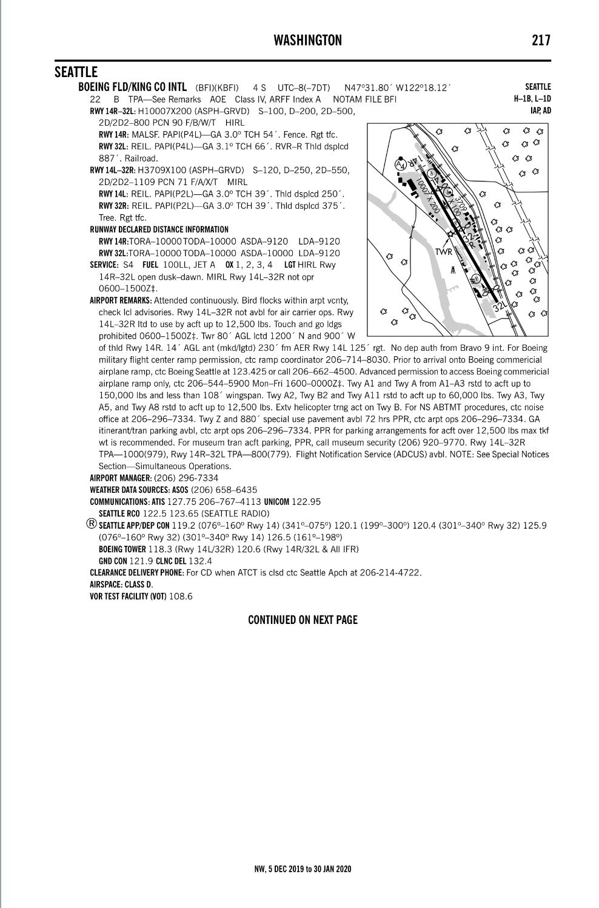
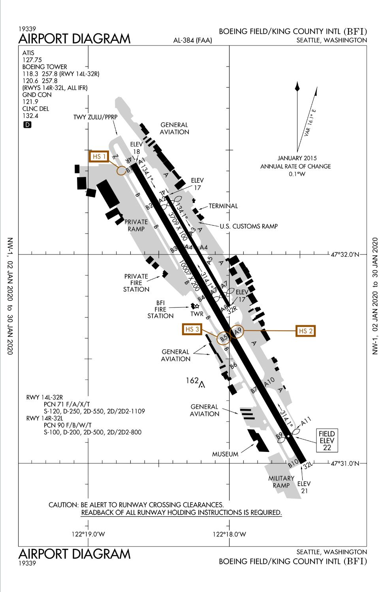

Bay ground (124.3): Bay Ground, Cessna 172 GWCG, on apron 1, on a VFR flight plan to Bellingham, request taxi for Eastbound departure with ATIS____.
(Discrete squawk code will be given for border crossing)
Bay Tower (118.1):
Bay Tower (127.6): Bay Tower, WCG, through 800’
Vancouver Terminal (125.2): Vancouver Terminal, Cessna 172 GWCG, with you over _____ at ____feet, request climb to 3000’ and flight following to Bellingham
Victoria Terminal (132.7): Victoria Terminal, Cessna 172 GWCG, with you over ____ at _____ feet, request flight following to Bellingham
Bellingham Atis (134.45):
(Set discrete squawk code for border crossing)
Bellingham Tower (124.9): Bellingham Tower, Cessna 172 Canadian, CGWCG, 10 miles North West (Refinery) / 7 miles NorthWest (Lake) to the airport, at 3000 feet, inbound for landing with ATIS __.
Bellingham Ground (127.4): Bellingham Ground, GWCG, on Taxiway ____, request taxi to customs box
Seattle Radio (122.15): Seattle Radio, Cessna 172, Canadian CGWCG, just arrived at Bellingham Airport, we would like to close the flight plan

"
KBLI
circuit height - 1200’
Runway 16 – right circuit pattern
Runway 34 – left circuit pattern
Things to do at KBLI FBO:
Text dispatch
Call CANPASS (1-888-226-7277) (PIC):
ETA;
aircraft license or registration number;
destination in Canada;
the full name, date of birth, and citizenship of all persons on board;
purpose of the trip and length of stay in Canada for non-residents;
length of absence from Canada for Canadian residents;
a declaration for each person aboard; and
any updates concerning the original ETA, passengers, or destination
check weather
File US flight plan (1-800-992-7433) to KBFI (altitude 2500’)
Departure from KBLI:
Bellingham ATIS (134.45):
Set squawk 1200
Bellingham Ground (127.4): Bellingham Ground, Cessna 172, Canadian CGWCG, on the main apron, request taxi for SouthBound departure with ATIS ___.
Bellingham Tower (124.9):
Seattle Radio (122.15): when clear of the zone, open the flight plan
Seattle Radio, Cessna 172, Canadian CGWCG, we would like to open the flight plan
Whidbey Approach (120.7): Whidbey Approach, Cessna 172, Canadian CGWCG, ___ miles south of the Bellingham airport at 2500feet, request flight following to Boeing Field. (Get the new squawk code)
Seattle Approach (128.5 or 120.4):
Boeing Field ATIS (127.75):
Boeing Field Tower (118.3): Boeing Field Tower, Canadian CGWCG, over _____, at 2500feet, inbound for landing with ATIS____.
(By Lake Union must be below 1800’)
Boeing Field Ground (121.9): Boeing Field Ground, GWCG, on Taxiway ___, request taxi to Signature.
Seattle Radio (122.5 / 122.65): Seattle Radio, Cessna 172 Canadian CGWCG, we would like to close the flight plan

"
KBFI
Circuit height - 1000’
Runway 14L – Left circuit pattern
Runway 32R – Right circuit pattern
Things to do at KBFI:
Text dispatch
Check weather
File US flight plan (1-800-992-7433) back to CZBB at 2500’
Departure from KBFI:
Boeing Field ATIS (127.75):
Set squawk 1200
Boeing Field Ground (121.9): Boeing Field ground, Cessna 172 Canadian CGWCG, on the main terminal, request taxi to Northbound departure with ATIS ____.
Boeing Field Tower (118.3):
(Stay below 1800’ !)
Seattle Radio (122.5/122.65): when clear of the zone, open the flight plan and get the trans border squawk code
Seattle Radio, Cessna 172 Canadian CGWCG, we would like to open the flight plan
Seattle Approach (120.4/128.5): Seattle Approach, Cessna 172 Canadian CGWCG, ___miles North of the Boeing Field airport at 1600’, request climb to 4500’ and flight following to Boundary Bay Airport
Whidbey Approah (120.7 / 118.2): Whidbey Approach, Cessna 172 Canadian CGWCG, with you at ____ feet, request flight following to Boundary Bay Airport.
(Set trans border squawk code before crossing the border)
Victoria Terminal (132.7): Victoria Terminal, Cessna 172 GWCG, with you at ____ feet, request flight following to Boundary Bay.
Boundary Bay ATIS (125.5):
Boundary Bay Tower (127.6 / 118.1) : Bay Tower, Cessna 172 GWCG, over ____, at ____feet, inbound for landing with ATIS____.
Boundary Bay Ground (124.3): Bay Ground, WCG, on Taxiway ___, request taxi to customs box and close the flight plan